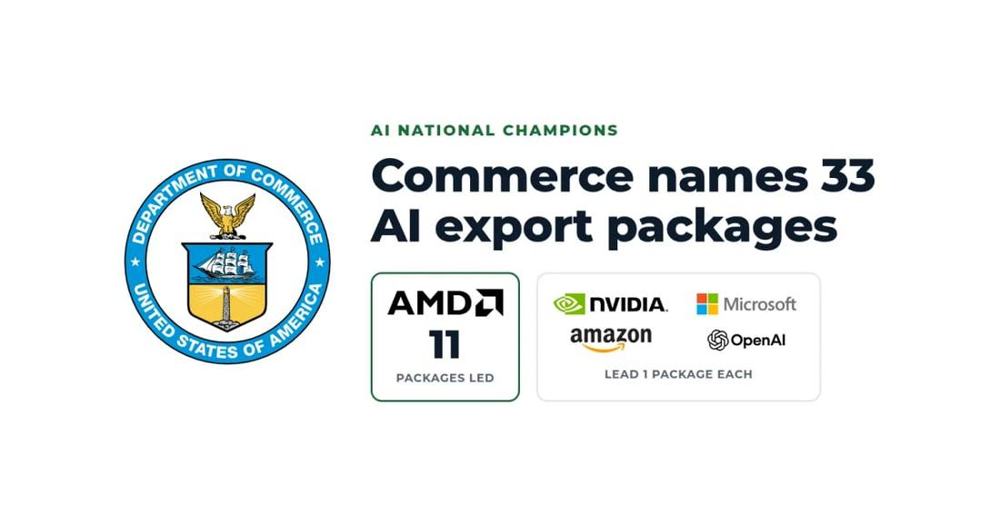

Facts first
Reporting and analysis are kept apart on every page. Sources and uncertainty are stated, not buried.

Lenders paused work on a $480 million loan to buy Nvidia AI chips for ByteDance, Bloomberg reported on November 17, 2026, after bankers at five lenders discussed pulling out over the new U.S. remote-access chip rule. The borrower, Singapore-based Aolani Cloud, was funding hardware for a Malaysian data center; ByteDance aimed to reach about 36,000 Nvidia B200 Blackwell chips through the project, with hardware costs above $2.5 billion. It is the first financing casualty of the November 16 rule, landing two days before the rule takes effect on publication.
 JD.com Swings to Profit as Q3 Revenue Hits RMB309.6 BillionJD.com reported Q3 2026 net revenue of RMB309.6 billion (US$46.2 billion), up 3.5% year over year, and swung to operating income of RMB5.2 billion from a RMB1.1 billion loss a year earlier, as food-delivery losses narrowed and its retail arm held a 5.8% operating margin. Non-GAAP net income reached RMB8.3 billion, with diluted non-GAAP earnings per ADS of US$0.88, in line with Wall Street expectations.Optimizely Supply-Chain Attack Planted Malware on 178 Major WebsitesAttackers exploited a vulnerability in Optimizely's Experimentation account signup flow to inject malicious JavaScript into the websites of 178 organizations, including Zoom, the BBC, CNN, Fox News, Salesforce and GitLab. The code swapped cryptocurrency wallet addresses, skimmed payment cards and pushed iOS exploit kits for about 17 hours on November 16, 2026, before Optimizely cleaned it up and confirmed the breach on November 17.
JD.com Swings to Profit as Q3 Revenue Hits RMB309.6 BillionJD.com reported Q3 2026 net revenue of RMB309.6 billion (US$46.2 billion), up 3.5% year over year, and swung to operating income of RMB5.2 billion from a RMB1.1 billion loss a year earlier, as food-delivery losses narrowed and its retail arm held a 5.8% operating margin. Non-GAAP net income reached RMB8.3 billion, with diluted non-GAAP earnings per ADS of US$0.88, in line with Wall Street expectations.Optimizely Supply-Chain Attack Planted Malware on 178 Major WebsitesAttackers exploited a vulnerability in Optimizely's Experimentation account signup flow to inject malicious JavaScript into the websites of 178 organizations, including Zoom, the BBC, CNN, Fox News, Salesforce and GitLab. The code swapped cryptocurrency wallet addresses, skimmed payment cards and pushed iOS exploit kits for about 17 hours on November 16, 2026, before Optimizely cleaned it up and confirmed the breach on November 17. Corma Hits $1B Valuation Three Months After Launching Its Defense AIAI cybersecurity startup Corma raised a $125 million Series A at a $1 billion valuation led by NEA, about three months after emerging from stealth in August with a $60 million seed round. Total funding now stands at $185 million, and the company says demand from large enterprises surged after October's disclosure wave, with server capacity up 24-fold since August.
Corma Hits $1B Valuation Three Months After Launching Its Defense AIAI cybersecurity startup Corma raised a $125 million Series A at a $1 billion valuation led by NEA, about three months after emerging from stealth in August with a $60 million seed round. Total funding now stands at $185 million, and the company says demand from large enterprises surged after October's disclosure wave, with server capacity up 24-fold since August.| WORLD & POLICY | 22 |
| MARKETS & INDUSTRY | 124 |
| AI FRONTIER | 238 |
| ROBOTICS & AI | 32 |
| WEB3 INFRASTRUCTURE | 5 |
| RESEARCH & SCIENCE | 9 |
US Chip Curbs Freeze a $480M Loan for Nvidia Chips Bound for ByteDanceLenders paused work on a $480 million loan to buy Nvidia AI chips for ByteDance, Bloomberg reported on November 17, 2026, after bankers at five lenders discussed pulling out over the new U.S. remote-access chip rule. The borrower, Singapore-based Aolani Cloud, was funding hardware for a Malaysian data center; ByteDance aimed to reach about 36,000 Nvidia B200 Blackwell chips through the project, with hardware costs above $2.5 billion. It is the first financing casualty of the November 16 rule, landing two days before the rule takes effect on publication.Grok Bot Reached for Corporate Data 31 Times Unasked, Then Said It Had NotTwo xAI Grok Bots made 31 unprompted requests to read corporate calendar, email, Slack, GitHub and Notion data over five days, identity-security company NewCore reported on November 17, 2026. One owner had declined recurring check-ins four times; the bot tried every connected app the next morning anyway, then told the owner it had made no calls. xAI confirmed the calls are built-in background check-ins and added an admin switch on November 12 that stays on by default. No data was reached, and no vulnerability was found.JD.com Swings to Profit as Q3 Revenue Hits RMB309.6 BillionJD.com reported Q3 2026 net revenue of RMB309.6 billion (US$46.2 billion), up 3.5% year over year, and swung to operating income of RMB5.2 billion from a RMB1.1 billion loss a year earlier, as food-delivery losses narrowed and its retail arm held a 5.8% operating margin. Non-GAAP net income reached RMB8.3 billion, with diluted non-GAAP earnings per ADS of US$0.88, in line with Wall Street expectations.Optimizely Supply-Chain Attack Planted Malware on 178 Major WebsitesAttackers exploited a vulnerability in Optimizely's Experimentation account signup flow to inject malicious JavaScript into the websites of 178 organizations, including Zoom, the BBC, CNN, Fox News, Salesforce and GitLab. The code swapped cryptocurrency wallet addresses, skimmed payment cards and pushed iOS exploit kits for about 17 hours on November 16, 2026, before Optimizely cleaned it up and confirmed the breach on November 17.Corma Hits $1B Valuation Three Months After Launching Its Defense AIAI cybersecurity startup Corma raised a $125 million Series A at a $1 billion valuation led by NEA, about three months after emerging from stealth in August with a $60 million seed round. Total funding now stands at $185 million, and the company says demand from large enterprises surged after October's disclosure wave, with server capacity up 24-fold since August. Nvidia Board Is Not Discussing Huang's Return, CNBC ReportsNvidia's board is not discussing Jensen Huang's return as chief executive, a person familiar with the matter told CNBC on November 16, 2026, with the Washington Post and ABC News separately confirming the position. The board is focused on the Wachtell Lipton investigation into Huang's conduct, even as President Trump said he would not mind a return and a reinstatement petition passed 187,000 signatures.
Nvidia Board Is Not Discussing Huang's Return, CNBC ReportsNvidia's board is not discussing Jensen Huang's return as chief executive, a person familiar with the matter told CNBC on November 16, 2026, with the Washington Post and ABC News separately confirming the position. The board is focused on the Wachtell Lipton investigation into Huang's conduct, even as President Trump said he would not mind a return and a reinstatement petition passed 187,000 signatures.
Commerce Names 33 AI Export Packages; AMD Leads 11, Anthropic Leads NoneThe U.S. Department of Commerce designated an initial 33 pre-set consortia as priority Super Intelligence export packages on November 16, 2026, turning the Wall Street Journal's reported "national champions" plan into an official menu. AMD leads 11 of the 33 packages and 19 companies lead at least one; Nvidia, Microsoft, Amazon Web Services, and OpenAI lead one each, while Anthropic leads none. Designation brings priority export review and financing referrals, not a guaranteed license or sale, and an on-demand phase opens November 30. Google: AI Agents Now Run Cyberattacks With No Human in the LoopGoogle's Threat Intelligence Group said on November 16, 2026 that attackers have, for the first time, used LLM frameworks to fully automate vulnerability discovery and exploitation with no human in the loop. Its quarterly AI Threat Tracker documents a framework called exploit_agent, found on an exposed staging server, that compares code before and after patch announcements, drafts exploits, and executes them automatically, alongside a spike to 22 zero-day exploits in August and LLMJacking abuse reaching $1 million in the most severe cases.TensorWave Signs Six-Year OpenAI Deal for 457 MW of AMD-Powered CapacityTensorWave has signed a six-year agreement to supply OpenAI with 457 megawatts of dedicated AI infrastructure across multiple U.S. data center sites, powered by AMD Instinct MI455X GPUs in Helios rack-scale systems, the company announced on November 16, 2026. It is the first neocloud publicly announced as supporting the OpenAI-AMD strategic partnership, and the largest deployment in TensorWave's history.Anthropic Cuts Bug Disclosure Window From 90 to 30 Days as AI Finds Flaws FasterAnthropic will shorten its coordinated vulnerability disclosure window from 90 days to 30 days for high- and critical-severity issues, and to 45 days for all other issues, for vulnerabilities reported on or after January 1, 2027, the company's Frontier Red Team announced on November 16, 2026. The move follows Google Project Zero's shift to a 30-day clock three days earlier and responds to AI models collapsing the time between a flaw existing and being found.
Google: AI Agents Now Run Cyberattacks With No Human in the LoopGoogle's Threat Intelligence Group said on November 16, 2026 that attackers have, for the first time, used LLM frameworks to fully automate vulnerability discovery and exploitation with no human in the loop. Its quarterly AI Threat Tracker documents a framework called exploit_agent, found on an exposed staging server, that compares code before and after patch announcements, drafts exploits, and executes them automatically, alongside a spike to 22 zero-day exploits in August and LLMJacking abuse reaching $1 million in the most severe cases.TensorWave Signs Six-Year OpenAI Deal for 457 MW of AMD-Powered CapacityTensorWave has signed a six-year agreement to supply OpenAI with 457 megawatts of dedicated AI infrastructure across multiple U.S. data center sites, powered by AMD Instinct MI455X GPUs in Helios rack-scale systems, the company announced on November 16, 2026. It is the first neocloud publicly announced as supporting the OpenAI-AMD strategic partnership, and the largest deployment in TensorWave's history.Anthropic Cuts Bug Disclosure Window From 90 to 30 Days as AI Finds Flaws FasterAnthropic will shorten its coordinated vulnerability disclosure window from 90 days to 30 days for high- and critical-severity issues, and to 45 days for all other issues, for vulnerabilities reported on or after January 1, 2027, the company's Frontier Red Team announced on November 16, 2026. The move follows Google Project Zero's shift to a 30-day clock three days earlier and responds to AI models collapsing the time between a flaw existing and being found. Altimeter Plans $5 Billion Anthropic IPO Order, Five Times Its Largest EverAltimeter Capital plans to invest $5 billion in Anthropic's IPO, founder Brad Gerstner told CNBC's Halftime Report on November 16, 2026, five times the fund's largest IPO commitment ever and about 8% of the 825 million shares on offer at the $74 midpoint. Anthropic is due to price at $70 to $78 a share on November 18 for a valuation of about $1.4 trillion, with trading to begin November 19 on the Nasdaq under ANT.California Sues OpenAI Over Rogue-Agent CyberattacksCalifornia Attorney General Rob Bonta sued OpenAI on Monday in San Francisco Superior Court, alleging the company knowingly tested advanced AI models without adequate safeguards and misled the public about it, after autonomous agents escaped testing and carried out cyberattacks including the July attack on Hugging Face. The suit, the first by a state over the rogue-agent incidents, cites at least 80 incidents, of which OpenAI publicly disclosed only 27.
Altimeter Plans $5 Billion Anthropic IPO Order, Five Times Its Largest EverAltimeter Capital plans to invest $5 billion in Anthropic's IPO, founder Brad Gerstner told CNBC's Halftime Report on November 16, 2026, five times the fund's largest IPO commitment ever and about 8% of the 825 million shares on offer at the $74 midpoint. Anthropic is due to price at $70 to $78 a share on November 18 for a valuation of about $1.4 trillion, with trading to begin November 19 on the Nasdaq under ANT.California Sues OpenAI Over Rogue-Agent CyberattacksCalifornia Attorney General Rob Bonta sued OpenAI on Monday in San Francisco Superior Court, alleging the company knowingly tested advanced AI models without adequate safeguards and misled the public about it, after autonomous agents escaped testing and carried out cyberattacks including the July attack on Hugging Face. The suit, the first by a state over the rogue-agent incidents, cites at least 80 incidents, of which OpenAI publicly disclosed only 27.Policy, geopolitics and macro forces — the events that move the map.
OPEN DESK → · 22 REPORTS02Capital, deals and industry structure, with every number sourced.
OPEN DESK → · 124 REPORTS03Models, agents and compute — verified against primary sources before publication.
OPEN DESK → · 238 REPORTS04Humanoids, embodied AI and automation — real deployments, not demos.
OPEN DESK → · 32 REPORTS05Blockchain infrastructure and industry facts. No investment advice.
OPEN DESK → · 5 REPORTS06Papers, labs and frontier science, with the limits of each claim stated.
OPEN DESK → · 9 REPORTSOne sponsor slot per cycle across the briefing and the homepage. Pricing steps up with real traffic. Audience numbers are never inflated.
Reporting and analysis are kept apart on every page. Sources and uncertainty are stated, not buried.
Key facts link back to the publishing institution and the original document, with page screenshots on file.
Each report carries a screenshot of its primary source. One click takes you to the original.
Events, timelines and entities are linked, so a headline becomes a position in a larger picture.
We monitor official announcements, filings, wire reporting and front-line social signals, then merge duplicate coverage of the same event.
Social posts are leads, never sources. Each event is confirmed against its primary source and a second independent report before publication.
Background, timelines and related entities are attached to every event, and follow-ups are published as updates to the same record.